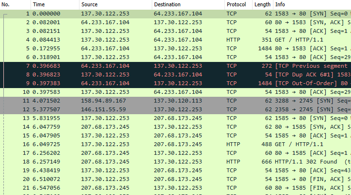
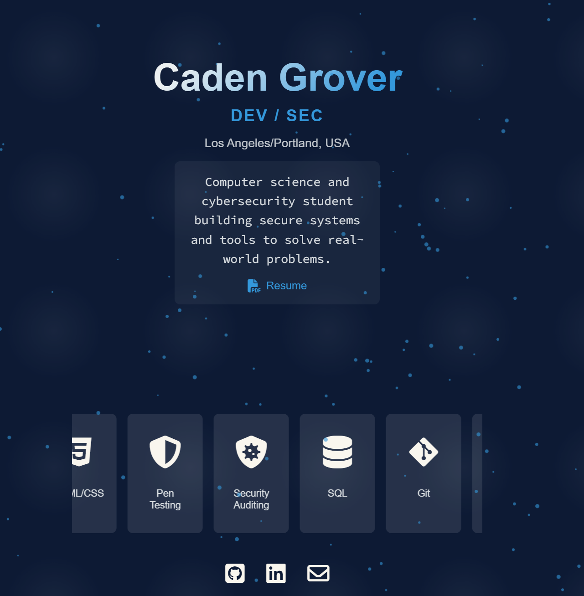
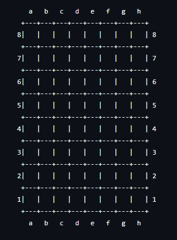
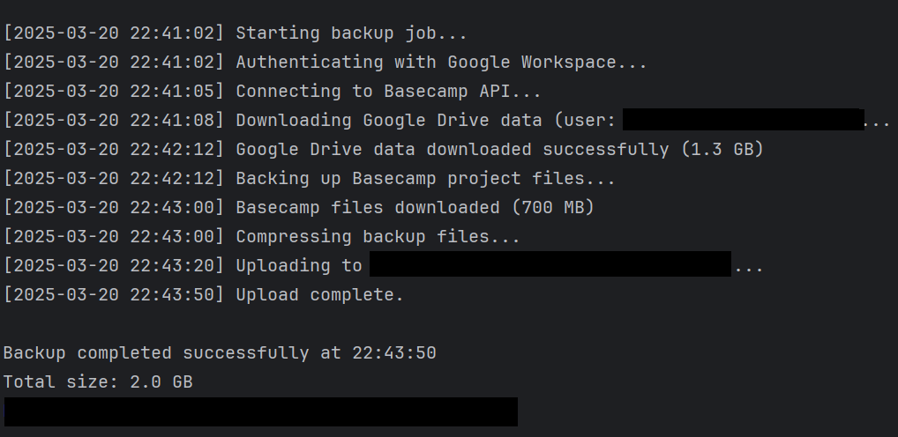

Software engineer and cybersecurity student building secure systems, AI-powered tools, and production data pipelines.
Hello, I'm Caden, a software engineer and cybersecurity student at George Fox University with a passion for building practical, secure tools that solve real problems. I currently work as a software engineer at Doctums, deploying integration software for higher-education institutions worldwide, and as an applied AI research assistant, designing agentic AI systems for university departments.
My work spans the full stack, from containerized .NET services and production data pipelines to natural-language database interfaces and autonomous AI agents. I'm particularly drawn to projects at the intersection of AI and cybersecurity, where I can combine my development skills with my security knowledge to build systems that are both intelligent and resilient.
Outside of work, you can find me competing in CTF challenges, tinkering with Raspberry Pi projects, or diving into network forensics. I also make time for gaming, working out, and hanging out with my cat!
Doctums | Remote
Oct 2025 - Present
A2IT @ George Fox University
Jul 2025 - Present
Tanoshi | Remote
Jan 2025 - Jun 2025
Third Wave Psychotherapy
Apr 2023 - Oct 2025
George Fox University, Newberg, OR
Expected May 2027

Built an autonomous AI agent on Raspberry Pi 5 with real-time speech interaction (STT/TTS), 33 function-callable tools, parametric face rendering at 60fps, wake-word detection, and sensor integration (touch, temperature/humidity).

Developed an OSINT reconnaissance tool in Python that leverages the IntelX API to search and aggregate publicly available intelligence data on targets for security assessments.

Implemented a functional clone of the Unix du command in C, handling recursive directory traversal and file system stat calls on Linux.

Designed and deployed a personal portfolio showcasing projects, cybersecurity work, and technical skills. Built with HTML, CSS, and JavaScript featuring a responsive design and smooth animations.
Placed 23rd nationally in ethical hacking CTF among all U.S. college teams
Competed in cryptography, network forensics, log analysis, OSINT, and reverse engineering
CompTIA Security+
Verizon Cloud Platform
Mastercard Cybersecurity Simulation